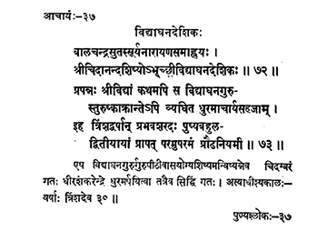

37. आचार्य - 37 - विद्याघनदेशिकः
बालचन्द्रसुतः ••• श्रीविद्याघनदेशिकः ॥ ७२ ॥
प्रपन्नः ••• प्रौढनियमी ॥ ७३ ॥
एष ••• त्रिंशदेव ॥
Son of Bālacandrasuta named Sūryanārāyaṇa, Śrī Vidyāghanadeśika was the disciple of Śrī Cidānanda.
The preceptor Śrī Vidyāghana, mastering the Śrīvidyā held the responsibilities of the preceptor despite the atrocities of Turuṣkas for thirty years. The staunch adherent of asceticism, he reached the highest state of Bliss on the second day of the black fortnight in the month of Puṣya in the year Prabhava.
This preceptor Vidyāghana, searching a worthy disciple to adorn the seat of the pīṭha, reached Cidambaram where he handed over the responsibilities of governing (the Maṭha) to Dhīraśaṅkarendra and attained siddhi there itself. His preceptor-ship was for thirty years.
